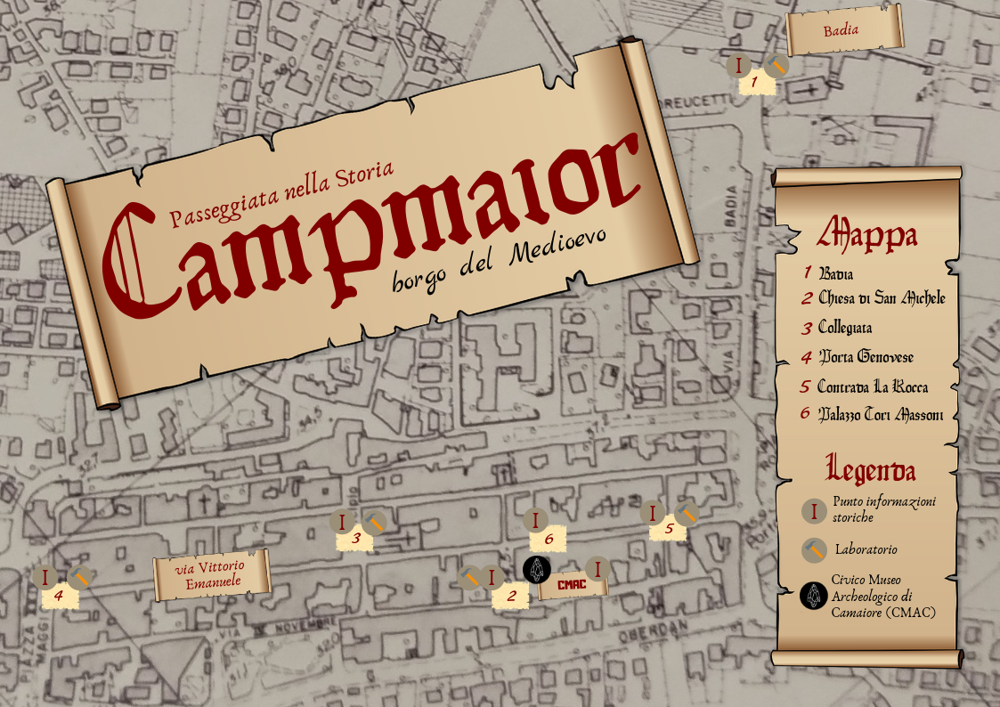

Questa mappa è stata realizzata utilizzando, come base, una mappa della città di Camaiore (LU) risalente al XVIII secolo.
La pianta, infatti, era molto fedele all'aspetto della città in tempi ancora precedenti, cioè durante il Medioevo, periodo in cui era ambientato il festival per il quale ho realizzato questo prodotto.
Scopo della mappa era quello di fornire indicazioni ai visitatori circa le attrazioni e i punti di interesse del percorso di visita del festival.
